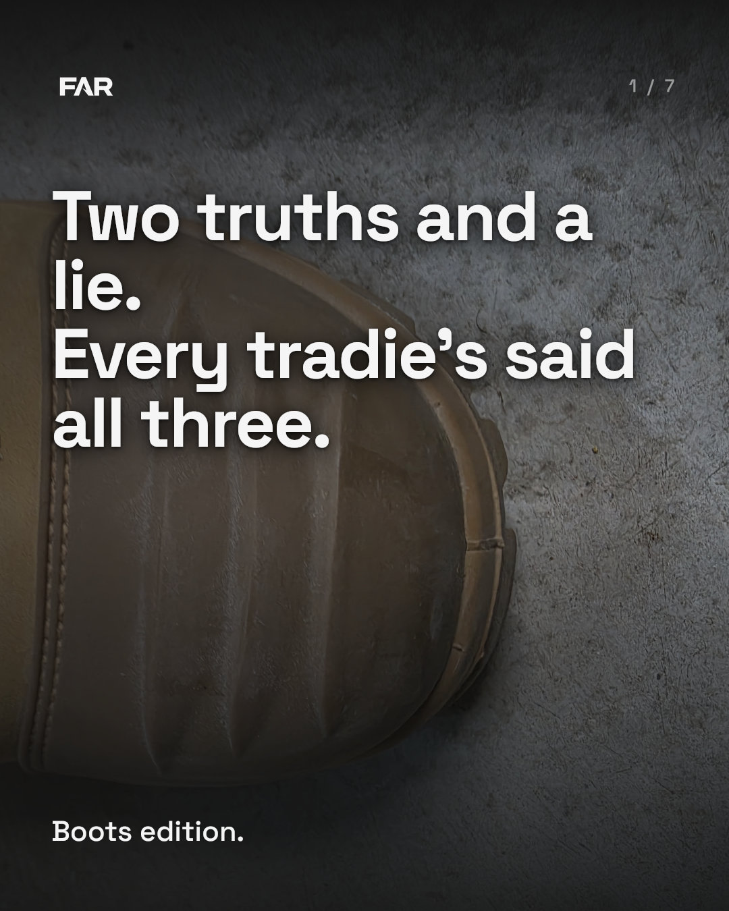
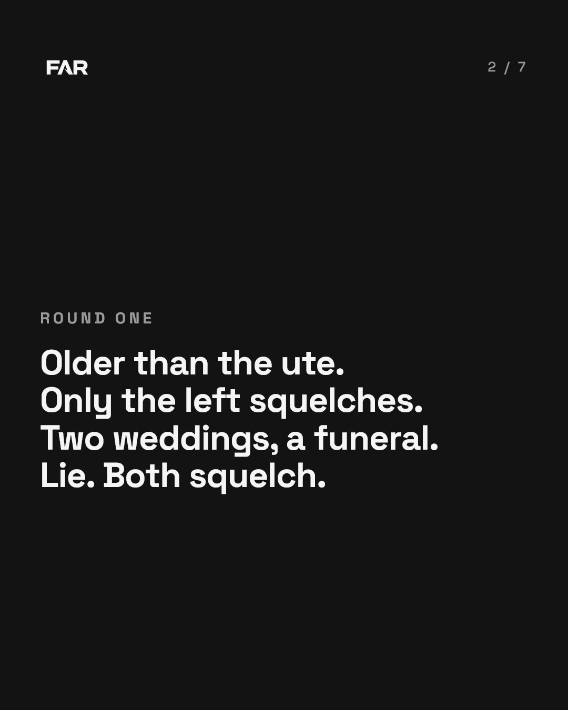
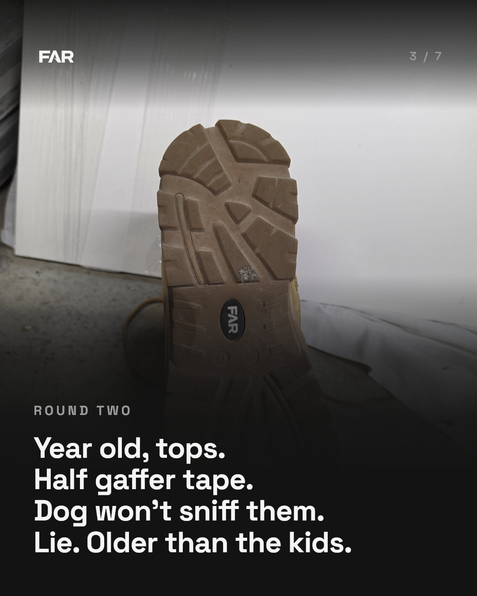
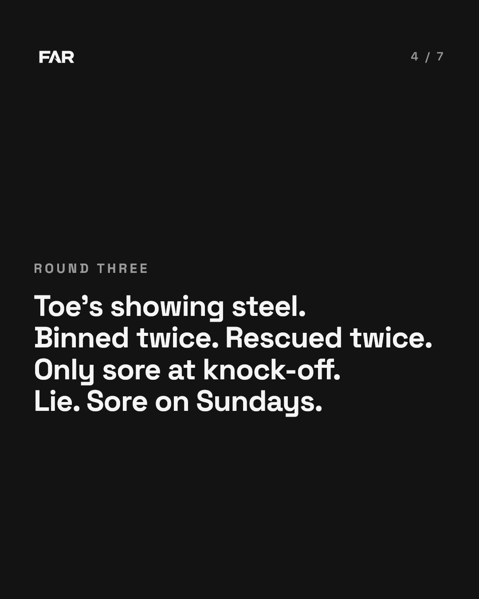
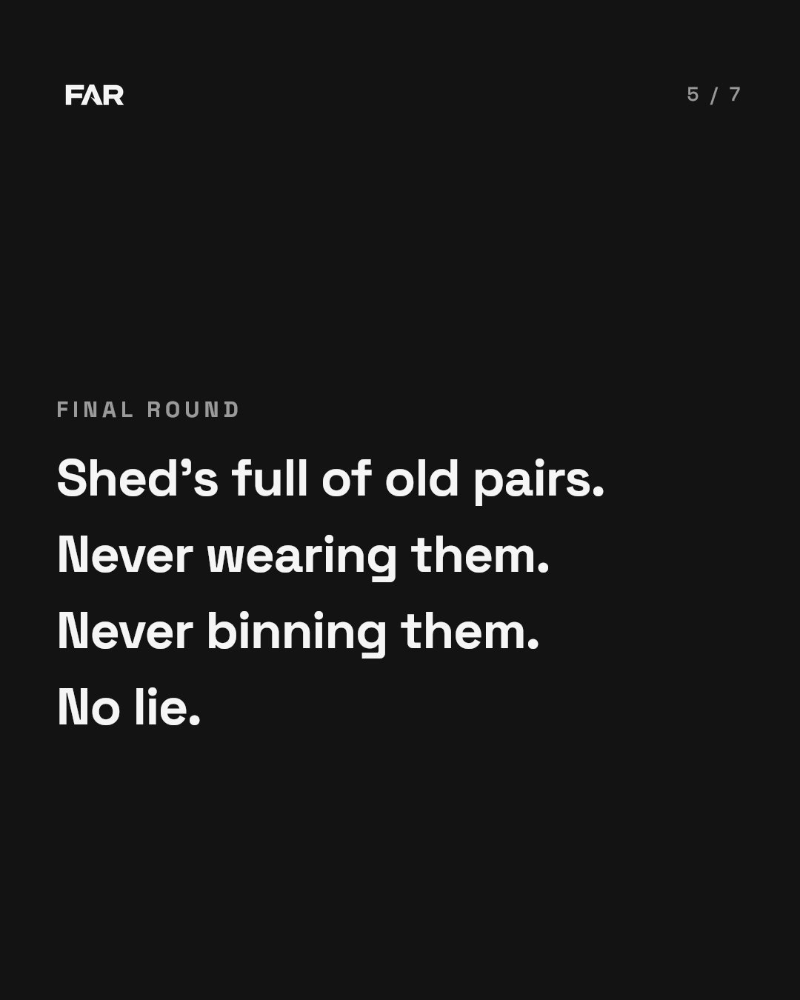
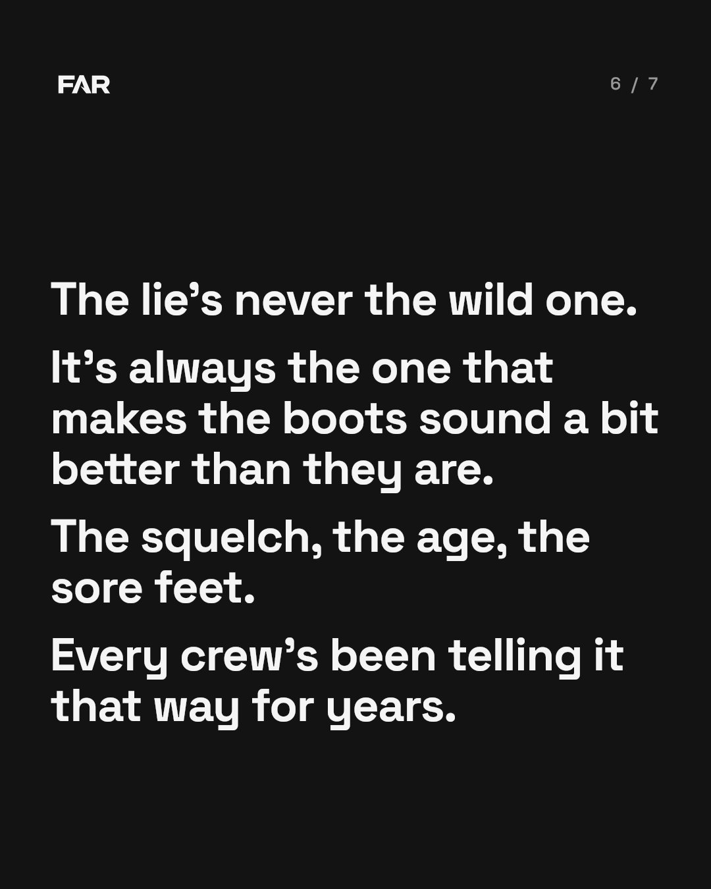
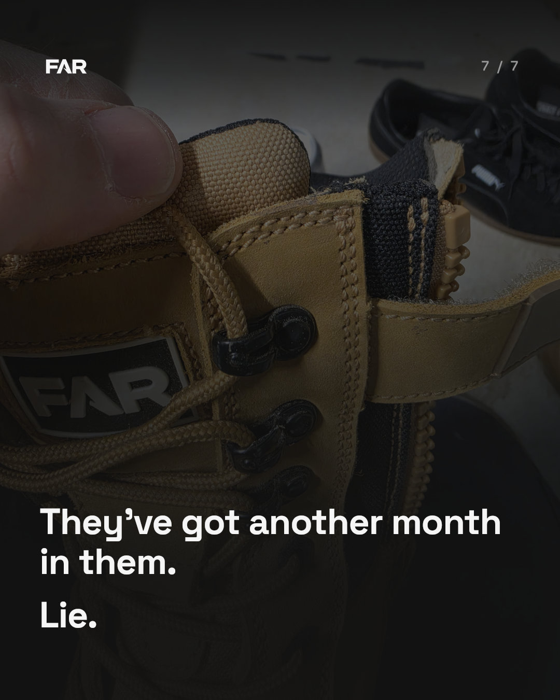

This is the first carousel the new dashboard maker built, from Con's 2 truths 1 lie message. It ran twice (Con's idea, then 'too much of a give away, make the lie harder to spot and make it funny'). Not for posting yet: a fix round is underway.







Not as easy as it looks. The truths are worse than the lies.
Yet to meet a bloke whose boots only squelch on the one side.
Unlisted page: anyone with the link can open it.